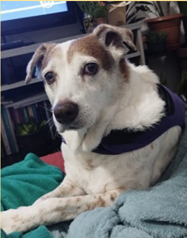
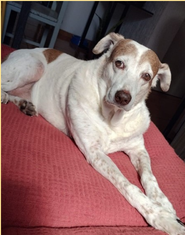
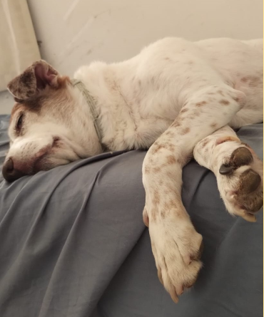
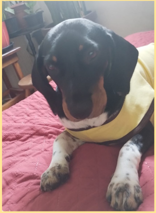
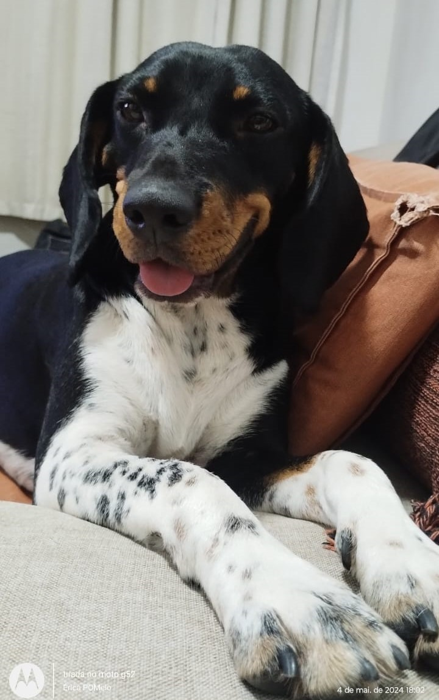
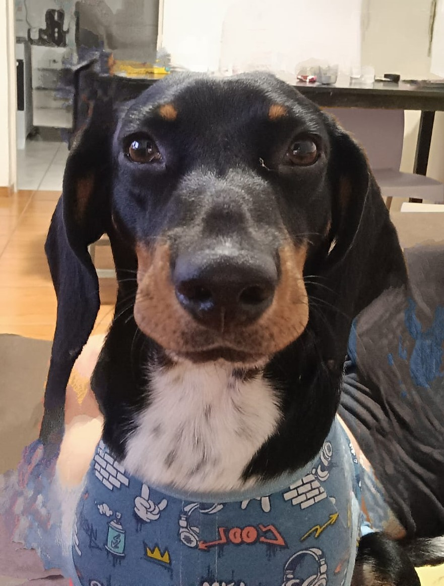
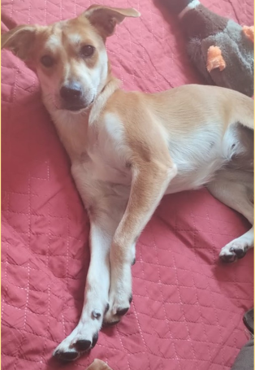
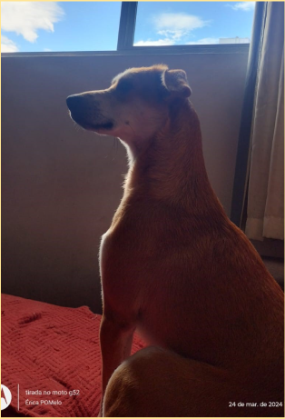
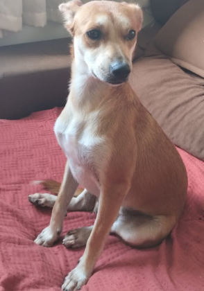

Depois de um dia ruim, abrace seu cão. Ele saberá exatamente como conforta-lo.
CaracteristicasFrancisco foi um vira - lata de porte médio grande. tinha 45 dias quando adotamos ele. |
ExperiênciaFui muito abençoada de ter ele em por 10 anos em minha vida, me alegrando. |
RipInfelizmente dia 10/12/2023 ele virou minha Estrelinha |
|---|---|---|
|  |  |  |
CaracteristicasMax é um vira - lata de pequeno porte foi adotado numa feira no dia 23/03/2024 |
ExperiênciaMax é muito carinhoso e obediente. É um presente ter ele comigo. |
CuriosidadesMax é muito ciúmento, e so quer comer razão se tiver patê misturado. |
|  |  |  |
CaracteristicasJoana é uma vira - lata de pequeno porte Foi adotada numa feira no dia 23/03/2024 |
Experiênciacomo nunca tive cachorrinha, estou aamanfdo, ela é muito companheira, apesar de medrosa |
CuriosidadesComo nasceu no abrigo, é medrosa e desconfiada, muito observadora destroi todos os brinquedos. |
|  |  |  |